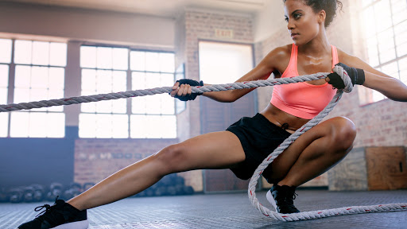
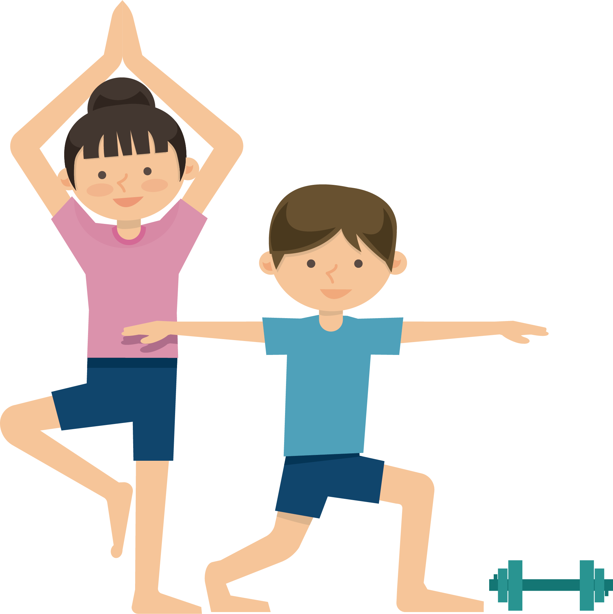
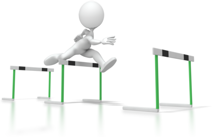
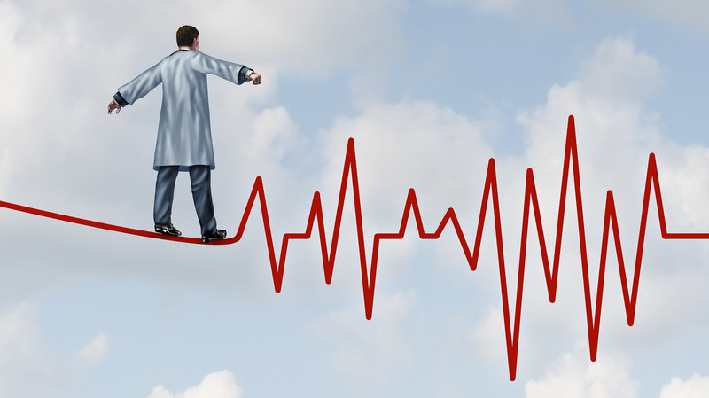

Overview & Facts

Your heart, your brain – your entire body – benefits from exercise. In this chapter, we’ll bust the exercise myths that hold you back and help you set goals.
-

The Basics
-
Exercise and Weight Loss
How to start working out if you want to achieve specific weight loss goals.
-
How Exercise Boosts Your Metabolism
Your next workout could set you up with a speedier metabolism.
-
Making Time for Fitness
Creating your personal workout schedule.
-
Your Guide to Getting Started
Use these simple how-tos to start your personalized fitness plan.
Exercise Benefits
-
Exercises for a Healthy Heart
Even taking a brisk walk for 30 minutes a day can make a big difference when it comes to exercising your heart muscle.
-
Regular Exercise for Mental Health
-
Workout Plan That Improves Posture
The best way to improve your posture is to focus on exercises that strengthen your core -- the abdominal and low back muscles that connect to your spine and pelvis.
-
Myths About Exercise and Aging
Fitness s timeless. At every age, it makes a huge difference in how you feel and move, helps you whittle down those numbers that your doctor keeps bringing up, and even brightens your mood.
Tips for Success
The path to a regular exercise routine has great rewards as well as roadblocks. We’ll help make it simple and safe – and give you motivation to push on.
-

Beating the Obstacles
-
No Gym? Exercise at Home
Use these tips to set up your at-home exercise routine.
-
Risky Exercises and Better Bets
Who has time to waste on ineffective, risky exercises? Not you. So ditch these nine moves that may not deliver the results you want -- and may even cause injury.
-
Best Workouts for Cold Weather
There are plenty of ways to be active in fall and winter, even if the weather turns cold. You can stay in shape and have fun while you're at it.
-
Best Workouts for Hot Weather
Summer is a great time for being active. Even if you live where it gets hot or humid, there are ways you can stay in shape year-round. But make sure to take precautions when you are active outside.
-

Getting Better
-
Take Your Workout to the Next Level
The best way to keep building muscle mass or burn calories is to make it a habit to switch up your workout -- especially when you notice that your current plan has become comfy.
-
Set Smarter Health Goals
Wouldn't it be nice if you knew exactly what to do to lose weight successfully? What you need is a fitness tracker and a smart goal!
-
Stay Healthy With These Apps
Combine your device with the right app and you may see even more results.
-
Should You Get a Fitness Tracker?
What these devices do and how to pick the right one for you.
-
Tips for Using a Fitness Device
6 tips from fitness tracker super users.
-
Avoiding Sports Injuries
-
Prevention and Treatment
WebMD takes a look at common workout injuries, how to prevent them, and what to do when workout injuries occur.
-
Muscle Strain Overview
Muscle strain -- or muscle pull or even a muscle tear -- implies damage to a muscle or its attaching tendons.
-
Lactic Acidosis and Exercise
Lactic acidosis occurs naturally during vigorous exercise.
-
Common Injuries From Running
Running injuries usually happen when you push yourself too hard or don't have the right form. You can prevent many of them. Here's how.
-
Knee Ligament Injuries
Ligament injuries in the knee - such as an anterior cruciate ligament (ACL) -- are dreaded by professional and amateur athletes alike.
-
Achilles Tendon Injury
Head injuries are injuries to the scalp, skull, or brain caused by trauma.
-
Ankle Injuries
Ankle injuries can happen to anyone at any age. Here's how to prevent and treat them.
-
Rotator Cuff Tear
It's one of the darkest fears of pitchers, tennis players, and many other athletes: a rotator cuff tear.
-
Head Injuries
Head injuries are injuries to the scalp, skull, or brain caused by trauma.
-
Sports Injuries A-Z
Learn about different types of sports injuries and treatments.